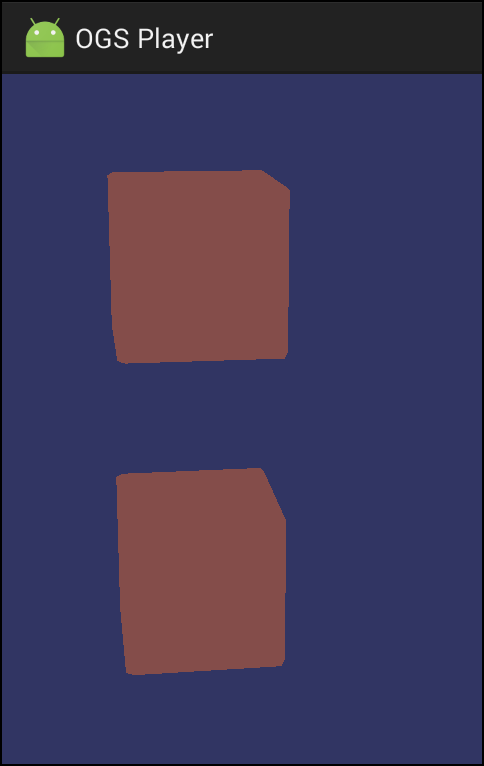

2017-03-16 00:00

In this article we describe our progress in January and February of 2017: rendering under iOS/Web and a new tutorial tool.
Rendering under iOS/Web
To our surprise, we got a simple red cube rendered under iOS and Web pretty fast: in early February. However, this is only the beginning of this year's challenge to support Android, iOS, and Web platforms. There's a long and bumpy road ahead of us as we need a lot more on each platform before we can claim a success: visual effects, Python scripting, data archives.. . .
2017-01-25 00:00

This article describes our plans for 2017.
Our past plans suggested we would have Android platform support by this time. However, we have a long way to go, before we can declare Android support. See for yourself:

Some people would consider this a failure. We don't. We see a chance to start low and jump high!
Having only worked with liberal and forgiving desktop environments, Android was a complete surprise for us. Android punished us for everything: memory, resources, graphics. The usual Android response was either a crash, or an empty screen.. . .
2016-12-31 00:00
Okay. It's been a hard year for everyone in the team. And it's almost over. Praise it ends! Praise the new one!
It may seem, that our progress stalled. Three years ago we announced the beginning of a new project (two to be precise), and now we still working on the engine and editor, haven't even started creating the actual game.
If you were monitoring our news during the year, you know that we held several live sessions, showing in the real time how to use our tools to create some simple games. Each session was a step in a long road to our goal. While preparing for these live sessions, we added necessary building blocks, that will be needed to create almost any game.. . .
2016-12-15 00:00

This article describes the start of MJIN library separation into modules.
Once we built OpenSceneGraph for Android, it became obvious that some MJIN functionality is not suitable for Android. For example, UIQt provides a basis for OGS Editor UI. Since OGS Editor is a desktop application, we don't need UIQt for Android.
We decided to have a look at two approaches to separate MJIN into modules: build-time separation and run-time one. Build-time separation means MJIN becomes highly configurable and each platform gets specifically tailored MJIN build.. . .
2016-11-19 00:00

This article describes how we spent a month building OpenSceneGraph (OSG) for Android: the first attempt to build OSG, the search for OSG alternatives, and the success in building OSG.
First attempt to build OSG.
Having no prior knowledge of Android development, we grabbed the latest Android Studio and started doing beginner tutorials. We passed Java part pretty fast. Everything worked out of the box. Then came C++ part and related problems.. . .
2016-10-31 00:00

In this article, we take another look at 2015-2016 live sessions' format and introduce a new showcase format for 2017.
2015 and 2016: live sessions.
As you know, we use live sessions to show the state of our technology and create a small functional game from scratch. We have conducted four live sessions in the past year, which gave birth to the following small games:
| № | Created game | Live session date | . . .
|---|